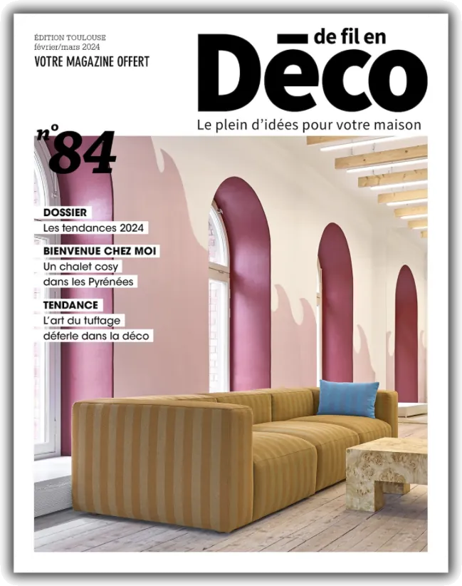
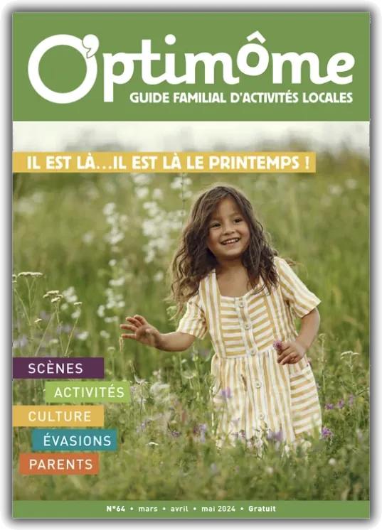
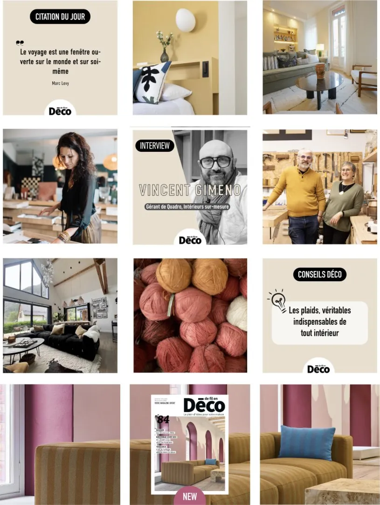
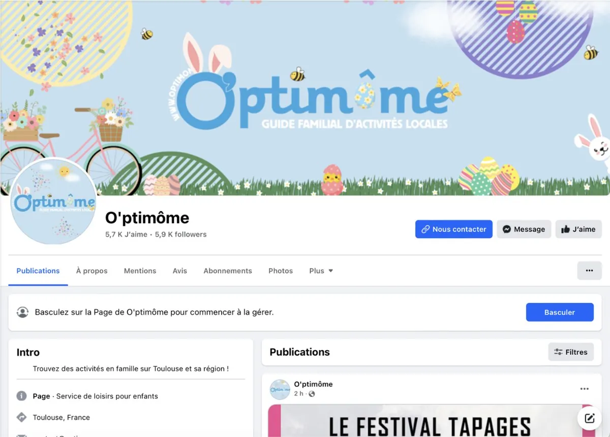
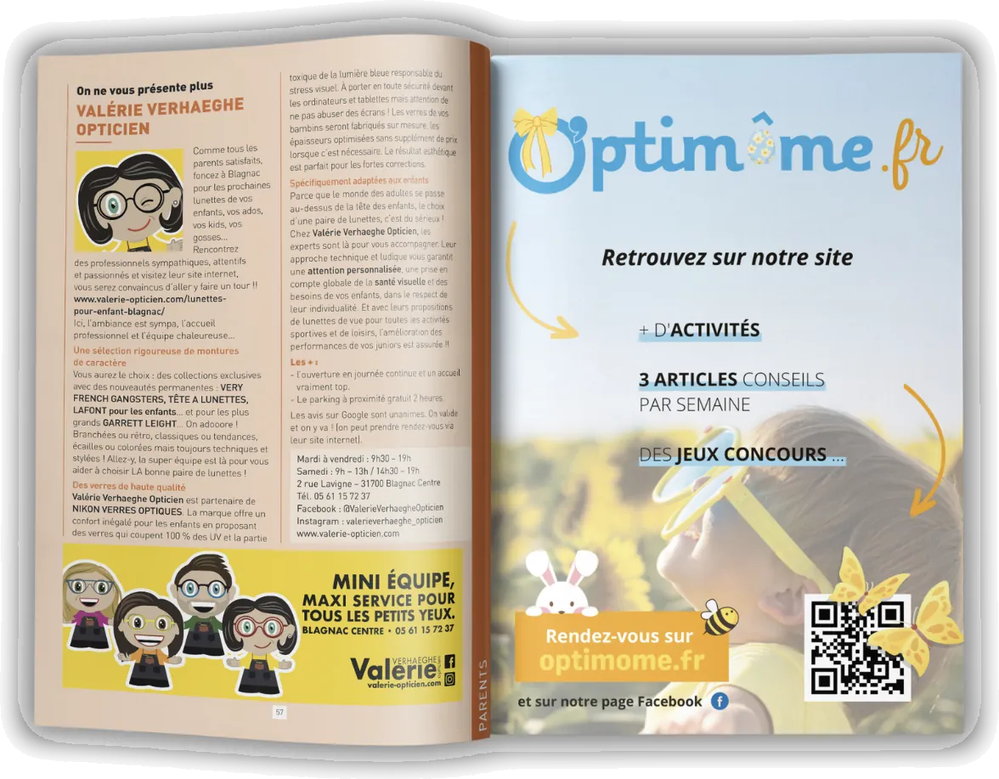
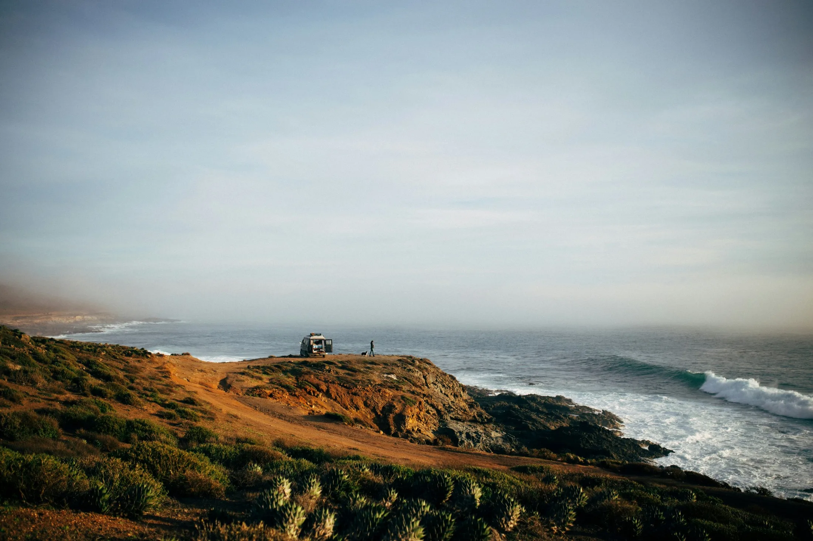

De Fil en Déco & O'ptimôme
ma première alternance
Community manager en alternance, de septembre 2023 à septembre 2024.


Trois médias toulousains : De Fil en Déco (magazine déco), O'ptimôme (guide des sorties en famille) et CFM Radio (radio locale). Ma première vraie expérience en com, sur trois comptes à la fois !
- Community management
- Social media
- Création de contenus
- Planning éditorial
- Meta Business Suite
De Fil en Déco
Le magazine déco de Toulouse. Sur Instagram, Facebook et LinkedIn, je suivais un modèle de feed précis : des contenus pros et inspirants, avec des formats qui changent.
- Réseaux sociaux via Meta Business Suite
- Formats variés : interviews, conseils, citations
- Pubs print pour faire connaître les réseaux




Pubs print : des pages dans le magazine pour renvoyer les lecteurs vers les réseaux et le site
O'ptimôme
Le guide des familles : des sorties, des spectacles, des idées d'activités… des contenus utiles et pensés pour toute la famille, avec des jeux concours réguliers !
- Page Facebook et compte Instagram
- Jeux concours pour animer la communauté
- Pubs print pour faire connaître le site





